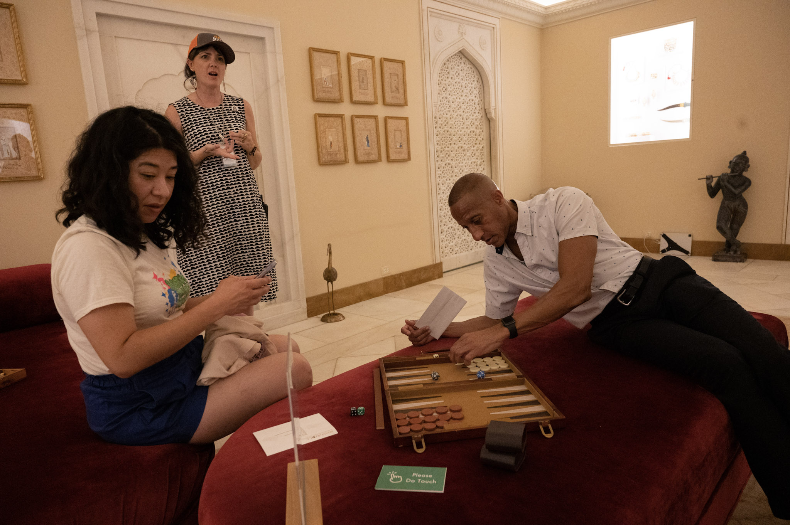
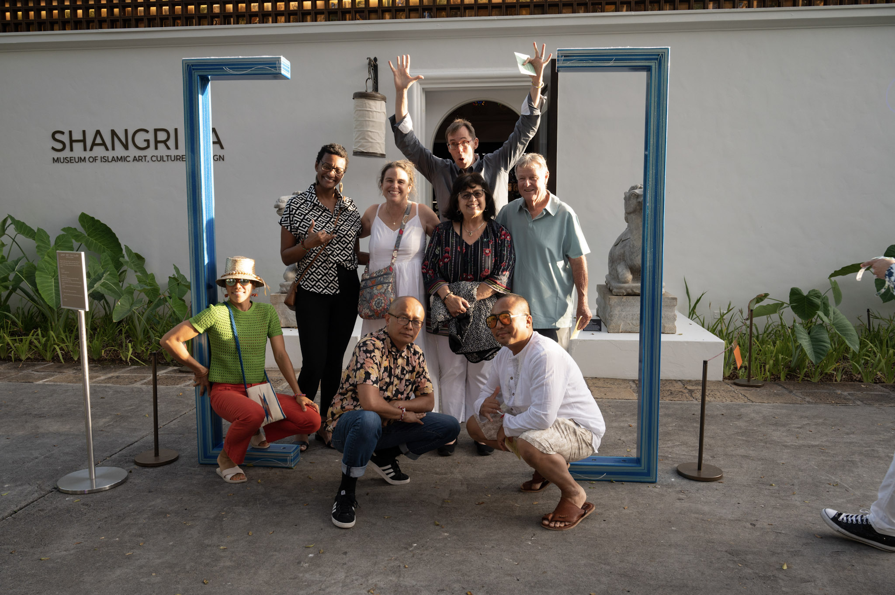

Lead Experience Designer, Art Director, Experience Writer, Graphic Designer, Game Designer
Game recognize Game/Bazi Recognize Bazi (the word “Bazi” translates to “game” in Farsi), a series of broken games, is a residency where artist Robert Farid Karimi designed site-specific game-performances meant to shine a light on playfulness and the power of FUN, generosity, and kinship at Shangri La Museum of Islamic Art, Culture and Design.


First Link: Karimi explains their methodology as an invited speaker in their talk Centering Playfulness for prestigious Games 4 Change conference in New York.
Second Link: shows audience members journey through various game performances, the following provides a map of their path through their experience:
A. What [Set] You Claim?: (featured in the photo above) is a game installation Karimi designed to disrupt the entrance of Shangri-La – which most people walk through amalgamating a phrase in gang culture: “What’s Your Set?” and mathematics, I invited the audience to form and claim with one’s “set” with strangers, friends, or anyone to be their co-playmates for the game night.
B. General Instructions - Audiences were given an envelope with Cards Against Humanity white cards to play with the Giant Black cards in the museum. The envelope also had game pieces, stickers, dice, and other objects to be playful and engage the experience. Players were given tickets for playing games, being kind, and sometimes if they won, but mostly for being playful, taking risks, and being humane. They turned in their tickets to take home a Game Box to continue to be playful and share the chisme/gossip of what happened.
Players could roam to any of the 4 rooms/areas for the other experiences with the Museum, which used to be Doris Duke's home:
C. Grandma Invaders - for description see next Sample
D. Cards Against Iranians...the Bling Bling Version - for description see Sample 2.2
E. Unequal Backgammon - A classic race game disrupted with unequal rules: black has 6-sided die - white has 20-sided die, and each player must find a way to play an equitable game. Here, game-host explains the rules, and “Please Do Touch” signals to players where they can play. (Karimi changed all the museum’s “Do Not Touch” signs.).
F. Local v Settlers - Using the card game mechanic of War, this game had two Royal facing decks with site specific backing: a Settler and a Local deck, in honor of wars fought between Hawaiian locals and settlers. The game asks whether players can play and win the game of war without losing their identity.
← Back to Samples